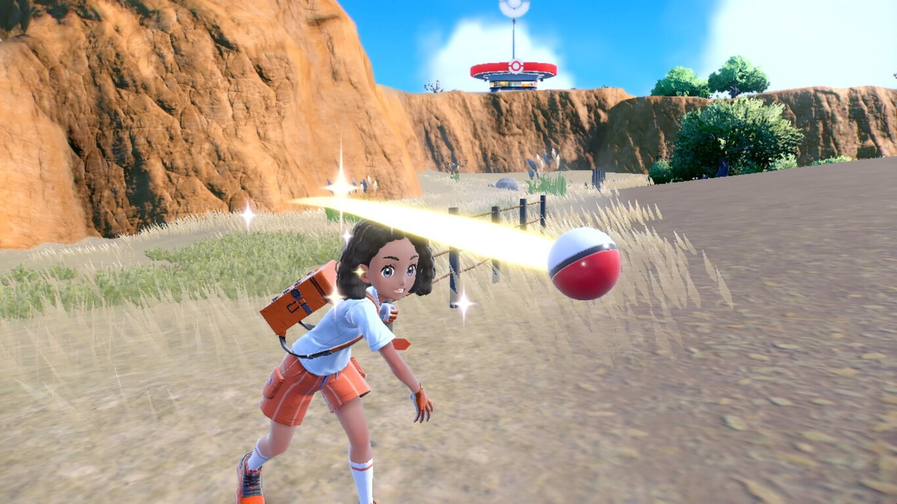
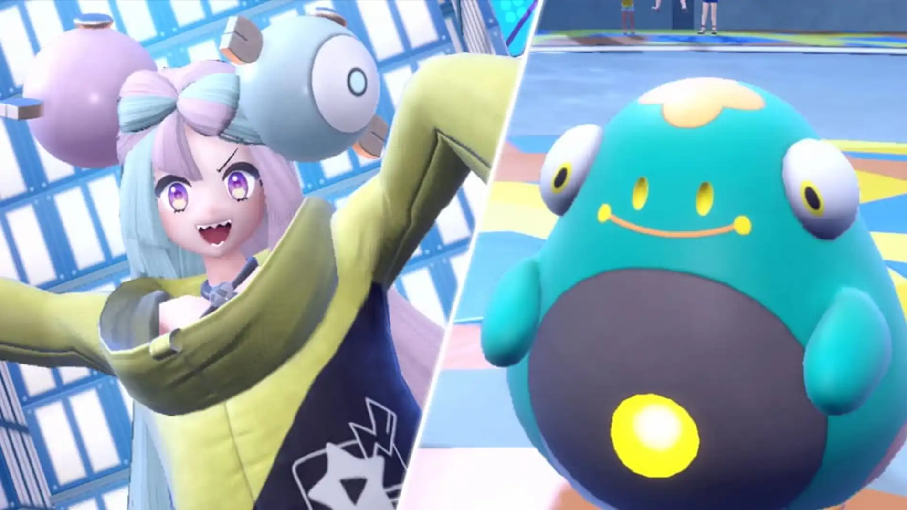
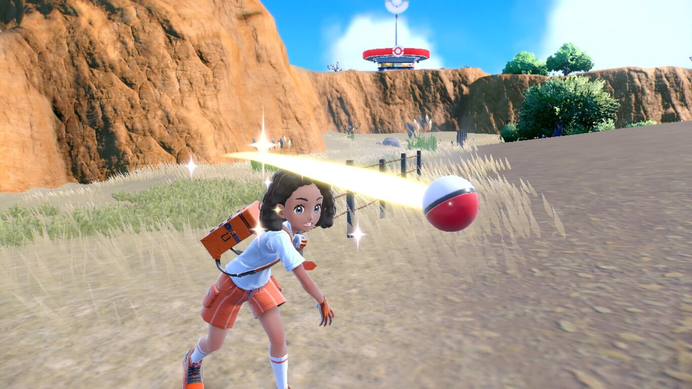
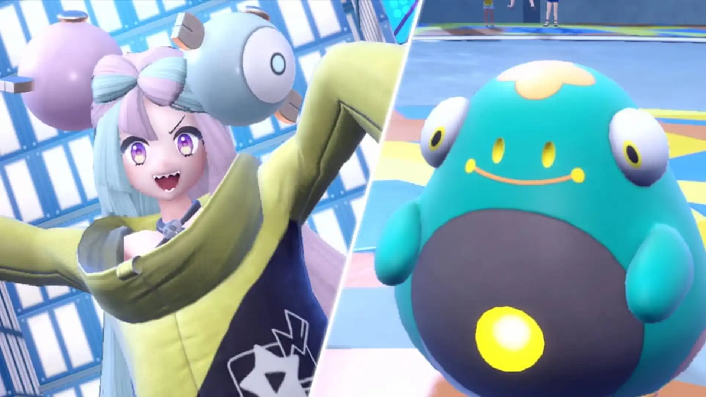

Pokémon Púrpura
Información del juego
Pokémon Escarlata (ポケットモンスター スカーレット Poketto Monsutā Sukāretto) y Pokémon Púrpura (ポケットモンスター バイオレット Poketto Monsutā Baioretto) son un par de videojuegos de rol desarrollados por Game Freak y publicados por Nintendo y The Pokémon Company para la consola Nintendo Switch. Fueron anunciados en el Pokémon Presents de febrero de 2022 como videojuegos de mundo abierto. Son las primeras entregas de la novena generación de la serie de videojuegos de Pokémon y se lanzaron el 18 de noviembre de 2022.
Pokémon Escarlata y Pokémon Púrpura siguen en gran medida la misma estructura de jugabilidad básica de los videojuegos de Pokémon anteriores, donde los jugadores obtienen criaturas conocidas como Pokémon, principalmente a través de la captura y el intercambio, y las usan para explorar el mundo y luchar contra otros entrenadores Pokémon.
Pokémon Escarlata y Pokémon Púrpura están configurados para tener mundos abiertos que incluyen tanto áreas urbanas como áreas silvestres abiertas sin fronteras entre los dos, a diferencia de las entregas anteriores de la serie Pokémon. Los videojuegos presentan tres nuevos Pokémon iniciales: Sprigatito, Fuecoco y Quaxly; y dos nuevos Pokémon legendarios: Koraidon y Miraidon. Para ayudar en los viajes, se pueden usar a Koraidon y Miraidon para atravesar el entorno. Una mecánica llamada "Enviar Pokémon" permite al jugador enviar un Pokémon para vagar por el mundo y luchar automáticamente contra Pokémon salvajes. Además, se incluye el juego cooperativo con hasta otros tres jugadores.
Pokémon Escarlata y Pokémon Púrpura presentan el fenómeno de la Teracristalización, que le da a Pokémon una apariencia cristalina, además de cambiar el tipo de un Pokémon para que coincida con el "teratipo" de ese Pokémon, así como desbloquear movimientos especiales como Teraexplosión, que, cuando es usado por un Pokémon teracristal, se convierte en un movimiento del mismo tipo que el teratipo del Pokémon.
Pokémon Escarlata y Pokémon Púrpura están situados en la región de Paldea del universo Pokémon, que parece estar basado en la península ibérica. El jugador visita la Academia Naranja (en Pokémon Escarlata) o Academia Uva (en Pokémon Púrpura) a tiempo para la búsqueda del tesoro anual, donde el personaje rival, Mencía, anima al jugador a explorar Paldea y encontrar su propio tesoro. A partir de ahí, se abren tres historias para que el jugador las experimente: en la Vía Stardust, el jugador se enfrentará a una pandilla de estudiantes rebeldes llamada Team Star; la historia de la Senda legendaria tiene al jugador formando equipo con Damián para explorar la región de Paldea para luchar contra Pokémon gigantes y obtener especias ocultas, y la Travesía de la victoria sigue la tradición de la serie de luchar contra los ocho Líderes de Gimnasio de la región para enfrentarse al Campeón y convertirse en el mejor Entrenador Pokémon. A diferencia de los títulos anteriores de los videojuegos principales, no hay un orden establecido para que el jugador se enfrente a los líderes de gimnasio.
Reseñas
IGN
Okay
"La jugabilidad de mundo abierto de Pokémon Scarlet y Violet es una dirección brillante para el futuro de la franquicia, pero este cambio prometedor se ve saboteado por las numerosas formas en que Scarlet y Violet se sienten profundamente inacabadas."
"6 / 10"
Metacritic
Mixto
"Basado en 125 reviews de críticas."
"Escarlata y Púrpura lleva la evolución de la serie Pokémon un paso adelante y dos atrás. Se destaca por brindar una excelente experiencia de juego en un mundo abierto, pero falla a nivel técnico y se siente más como una versión alfa que como un producto final. Desafortunadamente, la grave falta de pulido y optimización impide que Scarlet y Violet logren lo que bien podría haber sido la mejor generación de Pokémon hasta el momento. Eso no significa que no lo disfruté lo suficiente como para que valiera la pena, pero Pokémon Legends: Arceus me agradó un poco más."
"71 / 100"
LevelUp
"7.8/10"
"Con Pokémon Escarlata y Púrpura nos queda claro que la franquicia puede mejorar y superar los obstáculos que han frenado su ascenso. Hay grandes avances en la sensación de libertad y ha pasado de ser un RPG tradicional a un juego de mundo abierto que te mantendrá entretenido por horas. Estos aciertos en conjunto hacen que Pokémon Escarlata y Púrpura supere a Pokémon Espada y Escudo en todo sentido pero es una lástima que el apartado técnico sea desastroso.
Pokémon se ha vuelto enorme, con cientos de criaturas y ha logrado mantener un lado competitivo bien establecido pero pero hace falta más. Es momento de dejar de experimentar para pulir el producto y entregarnos la calidad que merecemos."
Imágenes y capturas del juego
 


